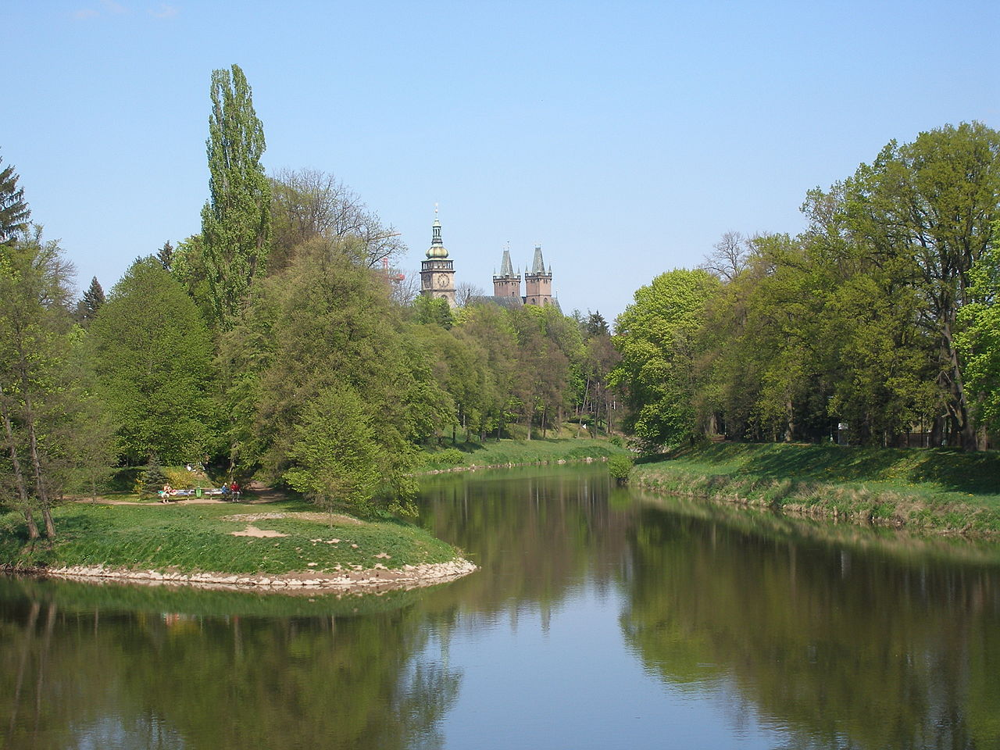
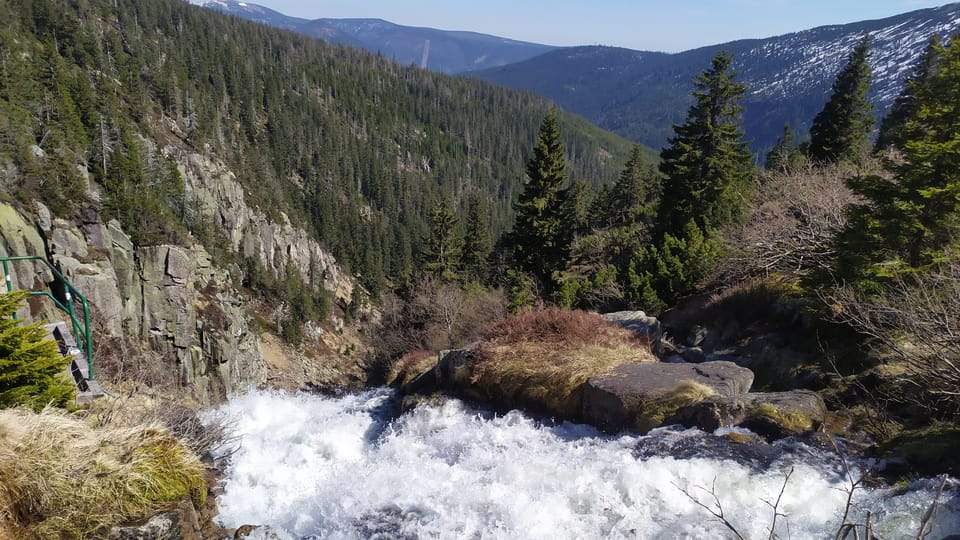

La Región de Hradec Králové es una subdivisión de la República Checa, dentro de la región histórica de Bohemia. La capital de la región es la ciudad de Hradec Králové ciudad homonima que se situa al sur de la región. Hace frontera con la Región de Pardubice, al suroeste con la Región de Bohemia Central y al oeste con la Región de Liberec. En el norte hace frontera con el voivonat polaco de Baja Silesia.
Parque en el centro de la ciudad de Hradec Králové
La primera mención escrita de Hradec (que significa "castillo") data de 1225, cuando ya se la mencionaba como ciudad.
En 1306, se convirtió en una ciudad dotal gobernada por reinas bohemias, lo que llevó a la adición de "Králové" (de la Reina) a su nombre, que literalmente significa "Castillo de la Reina".
La cascada del rio Elba en los Montes de los Gigantes
Tierra de montañas y pistas de esquí. El punto más alto de la República Checa, el pico Sněžka, de 1603 metros, se encuentra al norte de la región en la frontera con Polonia.